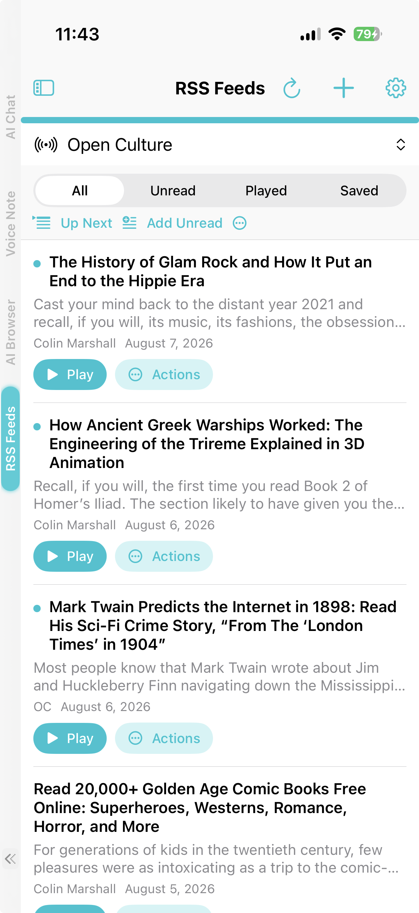
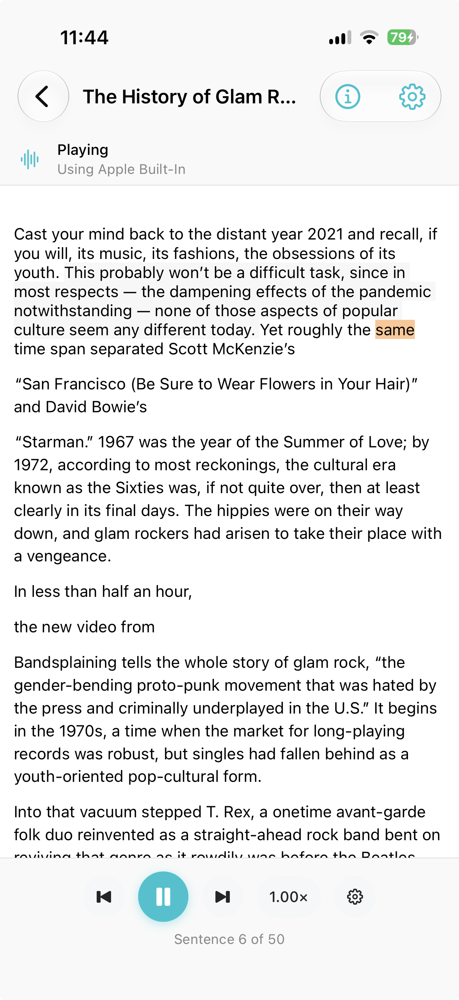
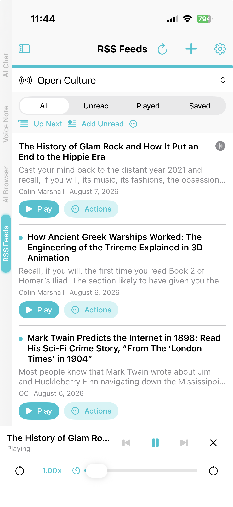

Why listening changes how you use private AI
Most of what we mean to read never gets read. A report lands in the afternoon, three long articles pile up, and a scanned chapter sits in the photo roll waiting for a quiet hour that never arrives. Summarizing all of it is one answer, but summaries throw away the part you actually wanted: the author's own words.
Listening is the other answer. It moves reading into time you already have — a commute, a walk, the dishes — without sending the document anywhere. Every step here runs on your device: text extraction, sentence indexing, OCR, and narration.
What you can add
Open Listen Library from the Side Menu or Menu hub and import:
- PDFs, Markdown, plain text, HTML, and RTF files
- Readable web URLs, with the source provenance kept
- Pasted text with an optional title
- Documents and links arriving through the system share sheet
- Scanned books built from photographed pages
Imports are copied into app-managed storage, so an item keeps working after you move or delete the original file. The reader keeps the source presentation rather than flattening it: PDFs render as native pages with a table of contents and zoom, Markdown keeps its headings and lists, and narration skips repetitive running headers and page numbers.
Each item stores its own position by sentence, so "Resume at Sentence 4 of 120" means the same place whether you come back on an iPhone or a Mac, and whether you changed the font size or the voice.
Scanned books and on-device OCR review
Some of the best reading is not a file yet. Create from Page Images takes photographed or scanned pages, lets you reorder, crop, rotate, and split facing pages, then recognizes the text with Apple Vision OCR. This is free, and it runs locally.
The part that matters is the review step. OCR gets things wrong, so you correct each page before saving, and the corrected text is what gets spoken. A saved scanned book opens in a split view with the original page images beside the extracted text, and the sentence being read is highlighted on both sides. Keep the page images for visual reading or delete them to reclaim disk space.
Text-to-Speech can also grab a single passage from an image the same way, when you only want one page read aloud rather than a whole book.
RSS, Atom, and JSON feeds with curated suggestions
RSS Feeds is its own top-level workspace, not a folder inside Listen. Add a feed by pasting a direct RSS 2.0, Atom, or JSON Feed URL, or browse a small curated catalog of English-language article feeds bundled with the app. Suggestions do not contact any publisher until you choose Follow.
Article text is fetched and cleaned locally. Filter by All, Unread, Played, or Saved; use Add Unread to queue a whole feed for continuous listening; and choose Save to Shelf when an article deserves to stick around — that copies it into Listen Library permanently, so it survives unsubscribing or the publisher pulling the page.
Manual and foreground refresh are free. Background Refresh, which checks feeds while the app is in the background, requires Pro.


Up Next, the sleep timer, and voices
Up Next is one durable queue shared by both workspaces. Play Next jumps an item to the front, Add to Queue appends it, and dragging reorders what is pending. The queue survives relaunches, and removing an item from it never deletes the source document or the subscription.
Playback belongs to the app rather than a single screen. Leave the reader and the same session continues in a mini-player with pause, skip, seek, speed, previous, and next. At night, the sleep timer stops playback after 5, 10, 15, 30, 45, or 60 minutes; it keeps counting while paused and resumes after a relaunch.

Narration uses Apple voices or supported local neural engines through a shared narration profile, and voice preferences can be scoped to a single document. When the active engine reports word-exact timing, the reader highlights the spoken word; when it only reports sentence boundaries, or when word mapping would be unreliable, it highlights the sentence or page instead of guessing. Word-level highlighting is free. Background and lock-screen playback requires Pro.
One thing to keep straight
Listen Library and Knowledge Libraries look similar and do different jobs. Listen is where you read and play something back. Knowledge is where AI Chat retrieves passages to answer a question. The two stay independent, and Copy to Knowledge makes a snapshot while Move to Knowledge transfers the document out of Listen. Deleting one copy never removes the other.
Frequently asked questions
What is the Listen Library?
A private reading and listening queue for PDFs, Markdown, text files, readable web articles, and scanned books. You open an item, follow the text, and play it back, with your position saved for later.
How is RSS Feeds related to the Listen Library?
RSS Feeds is a peer workspace next to the Listen Library, not a section inside it. Both share the same playback engine, Up Next queue, mini-player, narration profiles, and listening settings, and an article joins the Listen shelf permanently only when you choose Save to Shelf.
How do scanned books work?
Capture or import photographed pages, organize and crop them, then let free on-device Apple Vision OCR recognize the text. Review and correct each page, and the saved book keeps every page image beside its spoken text.